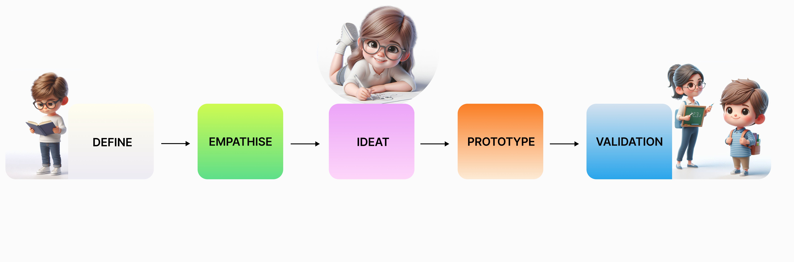
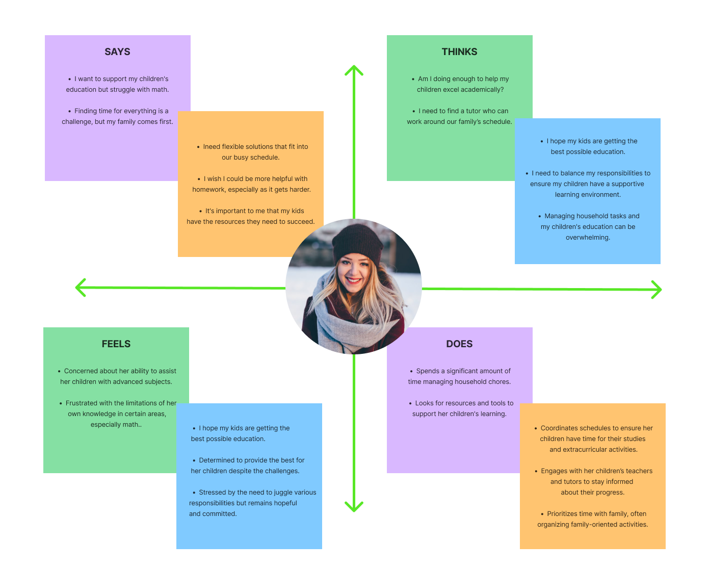
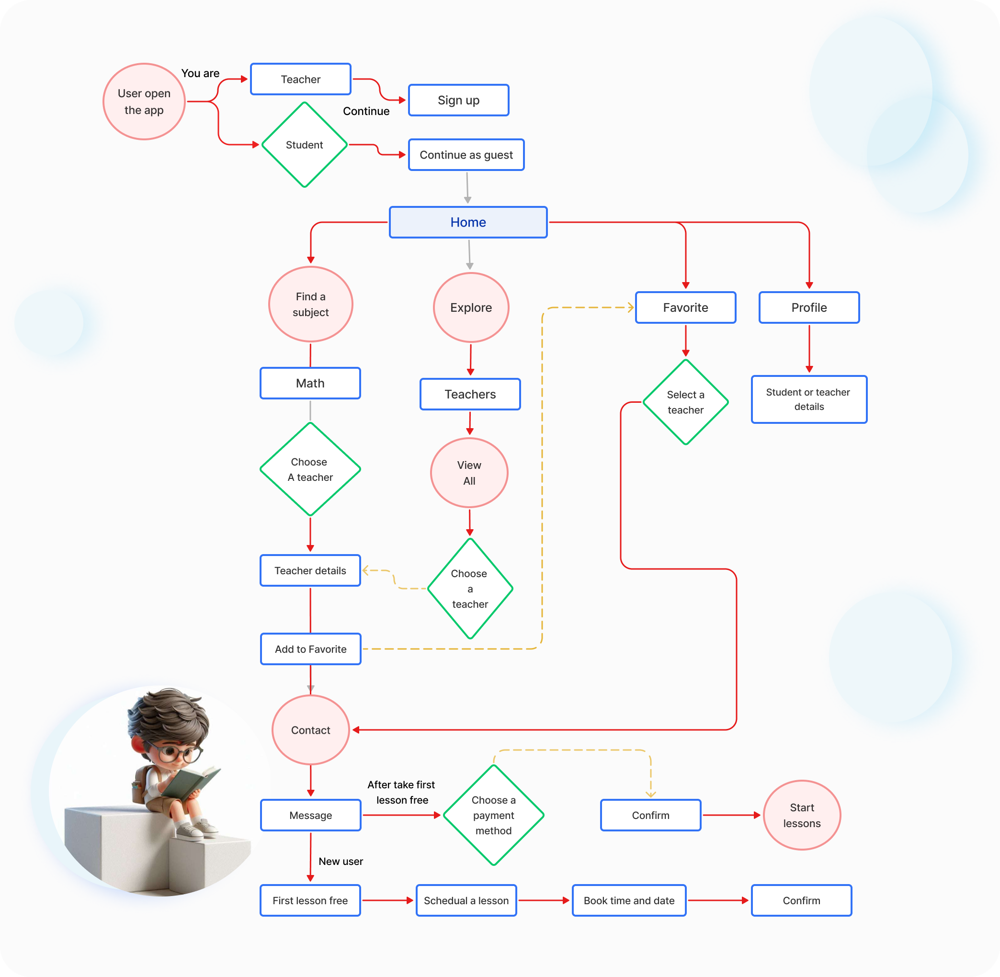
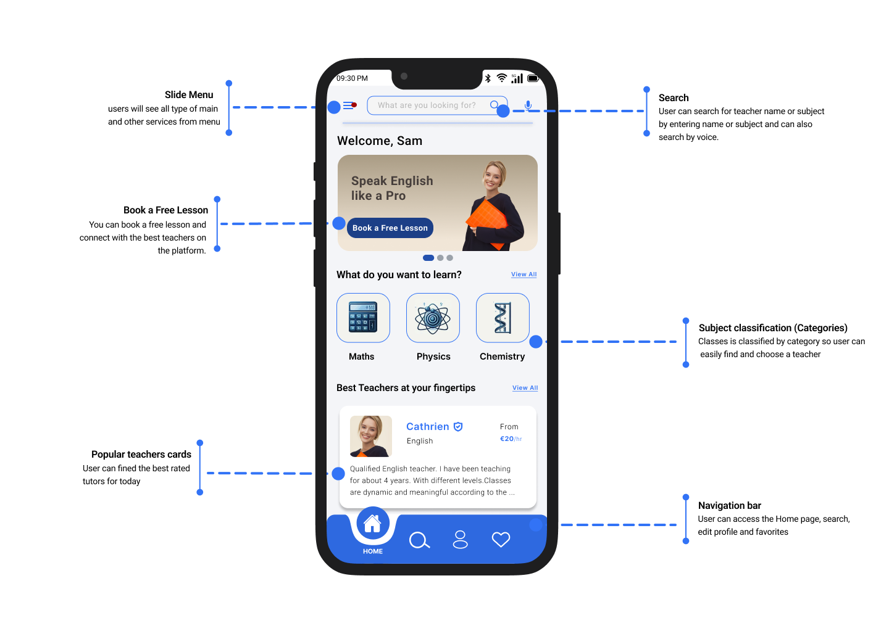
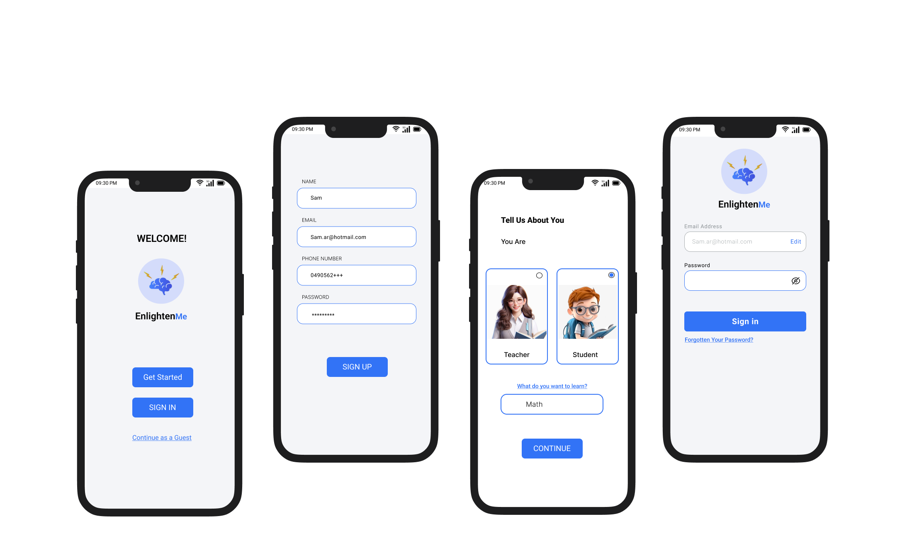
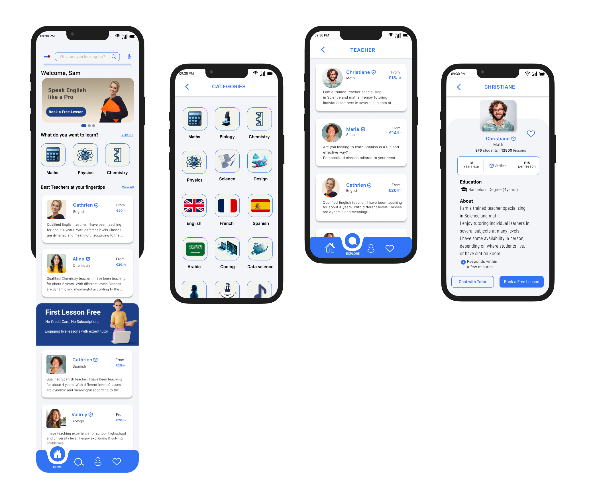
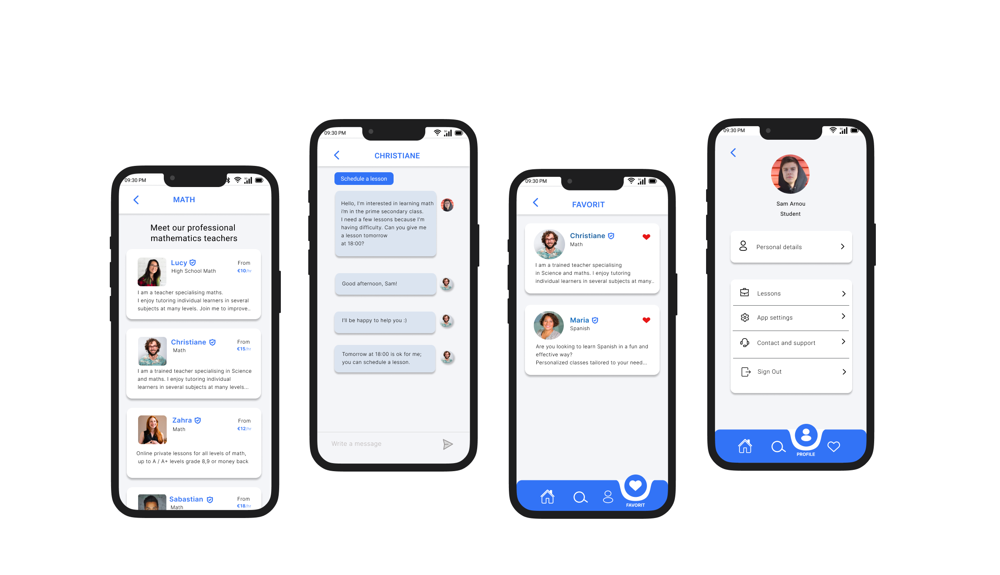
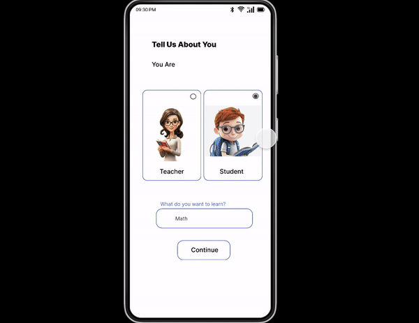

Inji Alasttal
Enlightenme is a mobile app where the student can find a tutor
and a teacher can search to find students.
Challenge: Identify pain points of the current app and suggest fixes to enhance the user experience.
Deliverables: Define. User research. Persona. Sitemap. Sketches. Prototype.
Role: UX Designer

DEFINE
Problem
There are many people who are looking for private tutors for their children nearby, because sometimes they are filled to find one. Teachers are also looking to find students so that they can improve and increase their teaching skills, income, and financial stability.
Solution
Design a mobile app where students can find teachers nearby in all the subjects they want, and teachers can search and find opportunities in online education to improve their skills and increase income through private tutoring.
EMPATHISE
User Research and Create Persona:
People are looking for tutors nearby because many people are very busy and can’t teach their children by themselves, so they lean on finding a tutor to improve their children’s understanding and confidence in approaching tasks. Also, there are teachers looking to improve their skills and increase their income, and by giving tutoring lessons, they can make a difference. Based on these findings, we create personas who are our target users and our study.
Empathy Map
Creating an empathy map involves understanding and visualizing a user's experiences, thoughts, feelings, and needs. Given the persona for Lara Ned, a 35-year-old full-time homemaker with a focus on managing household and family responsibilities, we can develop an empathy map that captures her perspective.

IDEATION
For the initial user research, I conducted a study and created the personas to analyze pain points and determine priorities. Then I generated “AI” to understand where in the process users were having troubles, created sketches, Lo-Fi and Hi-Fi clickable prototypes. The project timeline is two weeks. Now let’s go deeper into each step.
Sketch (Paper Wireframe)
I create sketches with unique ideas, based on identified pain points, draw multiple options to test and see how to do so by initiating minimal changes to improve the user experience, then I start creating the IA (information architecture).
USER FLOW
Userflow is the path a prototypical user takes on a website or app to complete a task. The user flow takes them from their entry point through a set of steps towards a successful outcome and a final action such as purchasing a product
PROTOTYPE
Low-Fi Prototype:
I developed the clickable prototype for validation testing, refined the user interface concepts, and produced low-fidelity wireframes. After doing validation testing, everything went well, and then I made my Hi-Fi prototype.
Style Guide
Typography: is the art and technique of arranging type to make written language legible, readable, and visually appealing. It involves the selection of typefaces, point sizes, line lengths, line-spacing (leading), letter-spacing (tracking), and the adjustment of space between pairs of letters (kerning). Typography encompasses both the aesthetics and functionality of text, playing a crucial role in the overall visual communication of printed and digital media.

Hi-Fi Prototype:
After finishing the validation testing, I turned the low-fi into a hi-fi prototype, and the prototype was navigated as it was supposed to be and came to the testing process as it showed a responsive design.
   Validation
Interactive Prototype:
I set up the interactive prototype to show the suggested flow when users search inside the app. I created an animated prototype that contains activities from the app.
Conclusion:
After four weeks dedicated to user research, meticulous analysis, and thoughtful design, I successfully gained profound insights into user preferences and identified key pain points. This UX case study has not only proven to be a challenging endeavor but also a highly rewarding experience, shaping my understanding of effective case study methodologies and the intricate process of app development. It has solidified my passion for UX design, and I find immense satisfaction in crafting solutions that cater to users’ needs. The journey has been enlightening, providing valuable lessons on the importance of empathy, usability, and the iterative nature of design. As I reflect on this experience, I am excited about the prospect of further refining my skills and knowledge in future studies. Overall, this case study has not only deepened my appreciation for user experience design but has also fueled my enthusiasm for continuous learning and improvement in this dynamic field. I am eager to apply these lessons and insights to future endeavors, contributing to the creation of more intuitive and user-centric digital experiences.